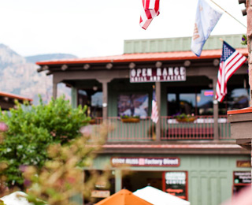

СЕДОНА — небольшой
городок в АРИЗОНЕ,
зАСЛУЖИвающий большего!
Рассмотрим 5 причин, по которым Седона круче чем гранд каньон!
-
НАСТОЯЩИЙ ГОРОДОК
1СЕДОНА НЕ АТРАКЦИОН ДЛЯ ТУРИСТОВ, ТАМ ТЕЧЕТ СВОЯ ЖИЗНЬ
 -
Жилье
Рекомендуем пожить в настоящем мотеле, все как в кино!
-
СУВЕНИРЫ
Не только китайского, но и местного производства!
-
Еда
Всегда заказывайте ФИРМЕННЫЙ БУРГЕР, Вы НЕ разочаруетесь!
-
ТАМ ЕСТЬ Мост дьявола
2Да, по нему можно пройти! Если конечно вы осмелитесь

-
НЕБОЛЬШАЯ
3
ПЛОЩАДЬВСЕ достопримеча-
тельности находятся очень близко -
КРАСИВАЯ
4
ДОРОГАЕХАТЬ В СЕДОНУ ИЗ ЛАС-ВЕГАСА совсем НЕ СКУЧНО!
-
МАЛО
5
ТУРИСТОВБольшинство едет в гранд каньон и толпится там
ЗАИНТЕРЕСОВАЛИСЬ?
Укажите предполагаемые даты поездки
и мы покажем вам лучшие предложения гостиниц в седоне